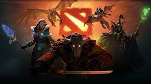
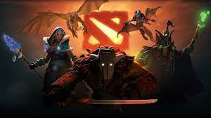

 
Torenos independientes:
En el apartado de torneos independientes se trata de unos torneos organizados por el administrador de la pagina que van a ser torneos con premio monetario y torneos por diversion, te hablaremos mas a fondo en el apartado de los Torneos independientes.
Roles en los videojuegos y equipos competitivos:
En este apartado hablamos mas a fondo en como se organiza un equipo competitivo en un torneo, uno pensaria que juegan por jugar, pero no es asi ya que tienen un lider o tambien conocido como en la comunidad inglesa IGL, tambien hablamos de los equipos competitivos con mas impacto en redes sociales y torneos, te hablaremos mas a fondo en Roles en los videojuegos y equipos competitivos.
Los torneos mas importantes:
En Los Torneos mas Importantes hablaremos de torneos mundiales en el mundo de los videojuegos, torneos que son tan grandes que tienen millones de dolares en premios y torneos que son tan grandes que llegan a ser transimitidos en television y en plataformas como Twitch juntando mas de 1 Millon de personas viendolo simultaneamente.
Fortnite, Call of Duty y Dota 2:
En estos tres diferentes tipos de apartados hablaremos sobre el juego, en que consiste, su genero de videojuego, su fecha de salida y cuantas ganancias han generado a lo largo de sus tiempos y su impacto en la famosa comunidad "Gamer".